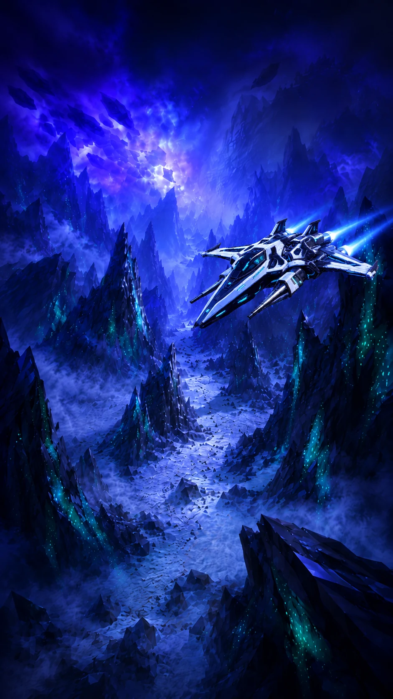

LAST SHIP
SAILING
ZERO-GRAVITY SHIP COMBAT

ZERO-GRAVITY SHIP COMBAT
for ID, leaderboard, stats, and the multiplayer lobby
MULTIPLAYER LOBBY
— online
awaiting sign-in...
auto-refresh 5s
PLAY TOGETHER 👥
Share a code with friends, then pick any mode below — Campaign, Race, or Multiplayer — to play together. Leave it blank to play solo.
MULTIPLAYER IS PEER-TO-PEER
via Trystero ; just a room code, no game server. Share the code ; anyone who enters it joins your mesh. Sign in with Discord (optional) to track stats on the leaderboard.